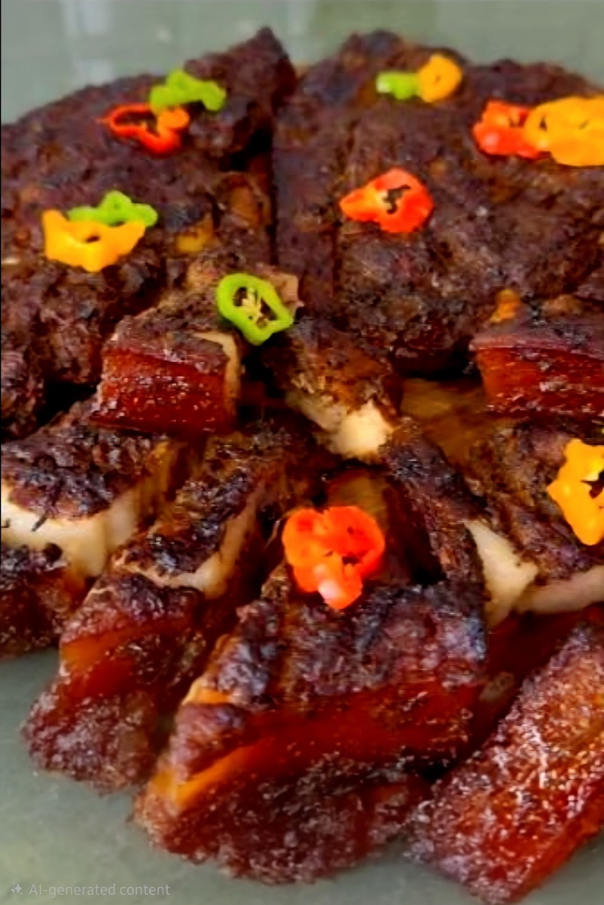
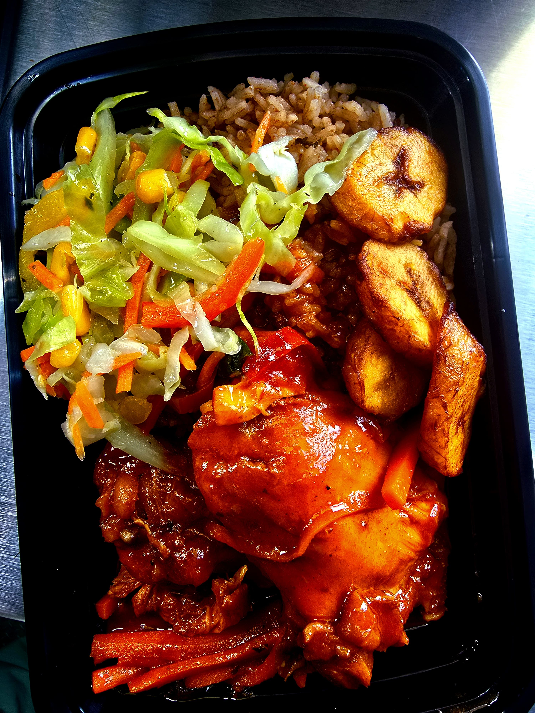
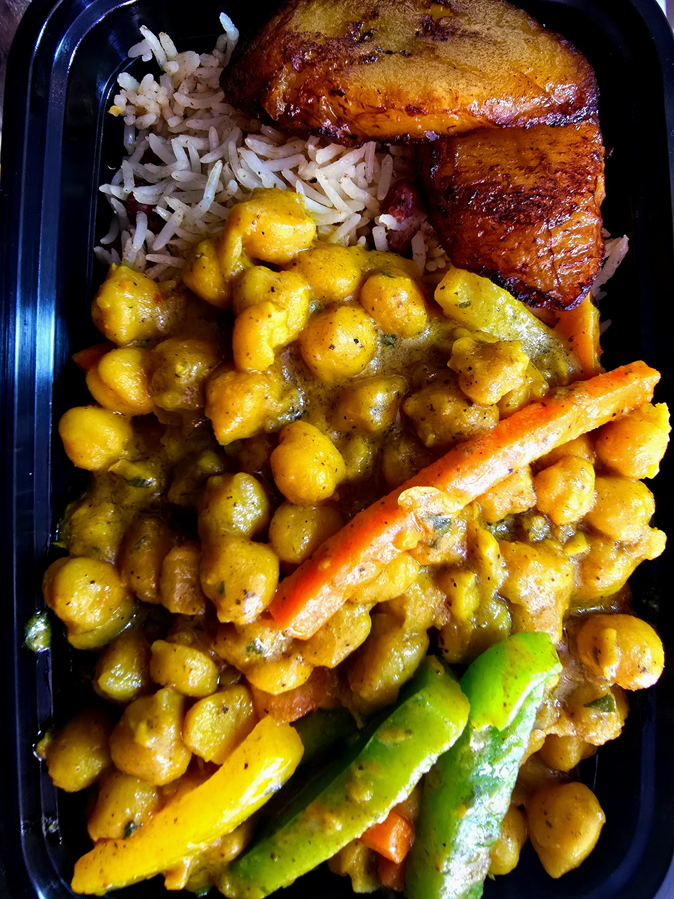

Featured Jamaican Dishes
Juicy Slow-Cooked Oxtails
Our oxtails are slow-cooked to perfection with our signature jerk seasoning.
Steamed Rice and Peas
Our rice and peas are cooked with traditional Jamaican spices and coconut milk for a rich, flavorful dish.
Jamaican Mac and Cheese
Our mac and cheese is made with a blend of Jamaican spices and a creamy, rich sauce.
Jerk Chicken Platter

Stand Alone Oxtails

Curry Goat Platter

Delicious Oxtails

Jamaican Jerk Chicken Platter

Jamaican Mac and Cheese

Brown Stew Chicken

Chickpea Platter

Payment Methods
Support local! We accept direct payments, credit cards, and mobile payments to avoid high card fees.
$Cash App Venmo